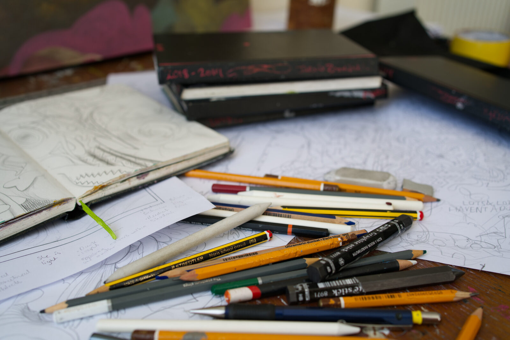

Abstract:A Very Short Introduction is an exploration of art, what it means, and why we value it. It examines topics in the field loosely called art theory: ritual theory, formalist theory, imitation theory, expression theory, cognitive theory, and postmodern theory. It considers some of the philosophers from Plato onward who have proposed theories about art and aesthetics and explores why we value art.
Artists have always written about art. And, like other writers in recent years, the internet has provided them a platform to do so outside of entrenched media. Websites like Brett Baker’s Painters’ Table have developed an audience by curating myriad artist-run blogs managed throughout the years. And yet, Greg Allen of greg.org observed, “So many of my go-to artist-blogs ended in 2015.”
">MASTER CLASS ART ACADEMY In our academy, we offer a vast number of courses, where each course is versatile, flexible, and deep in the subject’s aspect that they carry. Every student gets a tailored and wholesome learning experience in all our courses, irrespective of the age of the student or their level of understanding of the chosen subject. Deep dive focus, versatile subject, and attention to detail in our classes set us apart from any other art school. These qualities enable every student of ours to explore the medium thoroughly and discover their artistic voice, style, and beautiful abilities. Our hard belief in diversity made us design special courses for a variety of people. From summer camps for children to courses for NRIs and homemakers, we cater to every need of their own.
"Art materials are things that can be used up, while art tools are instruments or devices used to create art.
S